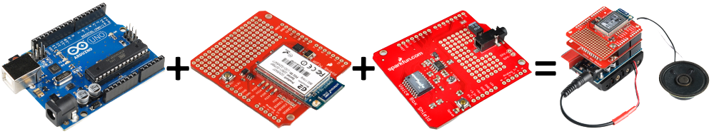
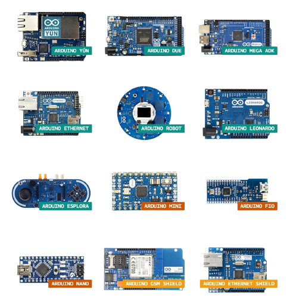

Arduino es una plataforma de creación de electrónica de código abierto, la cual está basada en hardware y software libre, flexible y fácil de utilizar para los creadores y desarrolladores. Esta plataforma permite crear diferentes tipos de microordenadores de una sola placa a los que la comunidad de creadores puede darles diferentes tipos de uso. El proyecto nació en 2003, cuando varios estudiantes del Instituto de Diseño Interactivo de Ivrea, Italia, con el fin de facilitar el acceso y uso de la electrónico y programación. Lo hicieron para que los estudiantes de electrónica tuviesen una alternativa más económica a las populares BASIC Stamp, unas placas que por aquel entonces valían más de cien dólares, y que no todos se podían permitir. El resultado fue Arduino, una placa con todos los elementos necesarios para conectar periféricos a las entradas y salidas de un microcontrolador, y que puede ser programada tanto en Windows como macOS y GNU/Linux. Un proyecto que promueve la filosofía 'learning by doing', que viene a querer decir que la mejor manera de aprender es cacharreando.
El Arduino es una placa basada en un microcontrolador ATMEL. Los microcontroladores son circuitos integrados en los que se pueden grabar instrucciones, las cuales las escribes con el lenguaje de programación que puedes utilizar en el entorno Arduino IDE. Estas instrucciones permiten crear programas que interactúan con los circuitos de la placa. El microcontrolador de Arduino posee lo que se llama una interfaz de entrada, que es una conexión en la que podemos conectar en la placa diferentes tipos de periféricos. La información de estos periféricos que conectes se trasladará al microcontrolador, el cual se encargará de procesar los datos que le lleguen a través de ellos. El tipo de periféricos que puedas utilizar para enviar datos al microcontrolador depende en gran medida de qué uso le estés pensando dar. Pueden ser cámaras para obtener imágenes, teclados para introducir datos, o diferentes tipos de sensores. También cuenta con una interfaz de salida, que es la que se encarga de llevar la información que se ha procesado en el Arduino a otros periféricos. Estos periféricos pueden ser pantallas o altavoces en los que reproducir los datos procesados, pero también pueden ser otras placas o controladores.
Arduino es un proyecto y no un modelo concreto de placa, lo que quiere decir que compartiendo su diseño básico te puedes encontrar con diferentes tipos de placas. Las hay de varias formas, tamaños y colores para a las necesidades del proyecto en el que estés trabajando, las hay sencillas o con características mejoradas, Arduinos orientados al Internet de las Cosas o la impresión 3D y, por supuesto, dependiendo de estas características te encontrarás con todo tipo de precios
La placa tiene 7 pines de alimentación, 14 pines digitales y 6 pines analógicos programables con el Arduino IDE (Entorno de desarrollo integrado) a través de un cable USB. Puede ser alimentado por el cable USB o por una batería externa de 9 voltios, aunque acepta voltajes entre 7 y 20 voltios. Es el buque insignia de Arduino ya que es la placa más popular, la que todo el mundo utiliza para iniciarse y la más sencilla de utilizar. Es el punto de partida de muchos entusiastas de la programación electrónica.
La placa con el microcontrolador más potente de la familia Arduino. Con 54 pines digitales que funcionan como entrada y salida; 16 entradas analógicas, 7 pines de alimentación, un cristal oscilador de 16 MHz, una conexión USB, un botón de reinicio y una entrada para la alimentación de la placa. Arduino MEGA es la placa que se utiliza cuando Arduino UNO no llega a cubrir las necesidades de un proyecto. Se ha utilizado ampliamente como centro de control y computación en impresoras 3D
La placa utiliza un microcontrolador Atmega32U4 AVR con oscilador de cristal de 16 MHz y una conexión micro USB capaz de actuar como un dispositivo cliente USB, como un mouse o un teclado.
La placa tiene 20 pines de entrada/salida digital (de los cuales 7 se pueden usar como salidas PWM y 12 como entradas analógicas), un oscilador de cristal de 16 MHz, una conexión micro USB, un conector de alimentación, un encabezado ICSP y un botón de reinicio.
La enorme flexibilidad y el carácter libre y abierto de Arduino hacen que puedas utilizar este tipo de placas prácticamente para cualquier cosa, desde relojes hasta básculas conectadas, pasando por robots, persianas controladas por voz o tu propia vending machine . En este artículo tienes varias decenas de ejemplos.